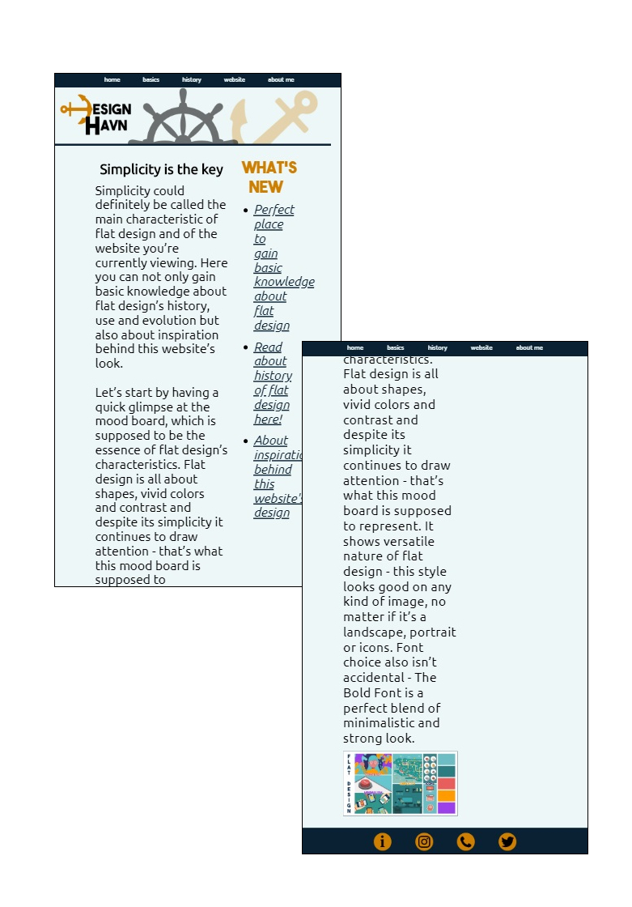

multimedia design
portfolio

Theme 1 - Basic Web
In this theme we learned about the basic design principles, typography, colours... and much more. We got introduced to Adobe InDesign, Illustrator and created our first moodboard. Moreover, we started to learn HTML, CSS and how to work with it, as well as validate it. After finishing the first project, which was a mobile website, we began working with wireframes, responsive web design and creating prototypes in Adobe Xd, what resulted in creating a responsive website at the end of the theme.
Mobile website
Creating a mobile website was our first attempt on working with HTML and CSS during studies, as well as a part of commencement study exam. We had to create a website for mobile devices about a given art style, making use of knowledge we gained during first lecture. I made a simple, minimalistic website with a balanced color scheme, which touches the subject of flat design. Due to flat design's characteristics I chose simple, sans-serif fonts for both display and text type.
Visualisation



Open the website